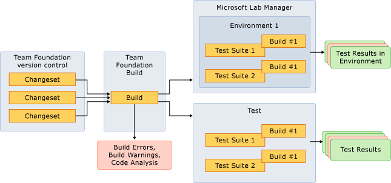

When many developers collaborate on complex software projects, it can be a long and unpredictable process to integrate different parts of code together. However, you can make this process more efficient and more reliable if you build and deploy your project continuously.
Continuous integration (CI) is the process of integrating your code into a shared repository as frequently as possible. During code integration, a build break or a test failure can inform you, in a timely manner, of an error in your code.
Martin Fowler has the following breakdown of practices for continuous integration:
-
Maintain a single source repository.
-
Automate the build.
-
Make your build self-sustaining.
-
Check in at least once a day.
-
Build each check-in on the CI server.
-
Keep the build fast.
-
Test in a clone of the production environment.
-
Make it easy for anyone to get the most recent executable.
-
Always be aware of what is happening.
-
Automate deployment.
For more information, see the following page on Martin Fowler's Web site: Continuous Integration.
Visual Studio Application Lifecycle Management (ALM) helps you manage the end-to-end process of software development and supports the practice of continuous integration. By leveraging the capabilities of Visual Studio ALM, your project can avoid unexpected delays, cost overruns, and execution risks.
In this topic
 Managing
Dependencies
Managing
Dependencies
Integrating code is a complex process because of the dependencies among code. For example, a library that draws a circle on a screen depends on the Sqrt() method of the system math libraries. If the Sqrt() method changes, you must update the library accordingly. Hardware and operating systems change much less frequently than your team project. However, ignoring changes under any circumstances can lead to disastrous results. You can integrate your code as early as possible to examine whether it is based on valid assumptions and whether it works as planned.
Changes in code can affect dependencies differently. The following illustration shows two situations. The example on the left shows a relatively isolated change. However, the example on the right shows a change with more potential impact because there are many dependencies on it.
The following illustration shows how constant changes can have compound effects if you do not integrate and upgrade your code continuously.
In step 1, you change code block h, which potentially affects all depending code blocks a, b, d, e, and f. In step 2, you change both code blocks a and b. If the team does not integrate between steps 1 and 2, blocks a and b might no longer be valid. In step 3, you change code block f. Assuming the team does not integrate between steps 2 and 3, code block b at this point has been affected, changed, and affected again. As a result, code block b can become challenging to fix.
Continuous
Integration in Visual Studio 2010
Visual Studio ALM provides integrated toolsets to support continuous integration. As the following illustration shows, these tools include version control, build, test, deployment to a lab environment, work item tracking, and the data warehousing functionality.
First, you can use Team Foundation version control to manage branches, changesets, and the integration between them. Each team member can use workspaces to work independently. For more information, see Branching and Merging and Set Up your Development Machine to Work with your Team's Project.
Second, you can use Team Foundation Build to compile, test, and deploy your software in an automated and distributed system. As the previous illustration shows, Team Foundation Build has two kinds of builds. One kind uses a continuous build type to build the development branch. The other kind uses a gated check-in build type to build the Main branch. Visual Studio Team Foundation Server supports five types of builds: manual, continuous (triggered by every check-in), rolling (accumulate check-ins until the previous build finishes), gated check-in, and scheduled. For more information, see Create a Basic Build Definition, Understanding a Team Foundation Build System, and Check In Pending Changes that Are Controlled by a Gated Check-in Build .
Third, lab management capabilities of Visual Studio ALM help define and deploy builds to both physical and virtual lab environments. To catch integration errors at runtime in a specific environment, you can deploy a build to a lab environment and then run test suites on this build. For more information, see Using a Virtual Lab for Your Application Lifecycle.
In addition, test capabilities in Visual Studio ALM are available on your team members' machines, on the build machine, and inside the lab environment. First, running test suites on the developer’s machine catches problems with the code that has been recently changed or created. Second, running tests on the build machine catches problems that relate to integration with other code. Third, running tests in the lab catches problems that relate to the variance in different environments. For more information, see How to: Configure and Run Scheduled Tests After Building Your Application .
|
|
|---|
|
Running tests can generate code coverage metrics, which you can use to understand how much code your test cases can cover. However, you cannot use code coverage to measure test completeness or quality. For more information, see How to: Configure Code Coverage Using Test Settings for Automated Tests. |
Fourth, Visual Studio Team Foundation Server is the repository that stores work items. You can create, manage, and track work items, such as bugs or tasks, that are assigned to your team members. If a build breaks during code integration, your team must fix the problem as soon as possible. You can configure Team Foundation Server to create work items for build breaks. For more information, see Tracking Bugs, Tasks, and Other Work Items.
Last, the databases of the warehouse for Team Foundation Server and for SQL Server Analysis Services aggregate and relate all the data that is provided by subsystems in Team Foundation Server. These subsystems include version control, build, test, deployment, and work item tracking. Therefore, your team can visualize the end-to-end process of continuous integration. For more information, see Generating Reports Using the Relational Warehouse Database for Visual Studio ALM.
Getting
Ready and Started
Your team can take the following progression to start using continuous integration and Team Foundation Server:
-
Use Team Foundation version control to integrate code into a single code base.
-
Create a manual build type in Team Foundation Build.
-
Run automated test cases to verify the quality of your build. If you do not have an appropriate test suite, create a placeholder test suite and import a few automated test cases. This suite can serve as a placeholder for future tests.
-
Ensure that you deliver the resulting binaries from a build to a shared location. This strategy can help you diagnose problems that appear during testing.
-
Use Microsoft Test Manager to catch integration errors at runtime in a specific environment.
Version
Control
A version control system provides a shared repository to your code. A small team can work with a single branch. However, working with two or more branches is more feasible because you usually must develop multiple versions of code and release your project in different milestones. For more information about how to create and merge code branches, see the following page on the CodePlex Web site: Team Foundation Server Branching Guide 2.0.
Build
In continuous integration, a build system generates the executable components that can be tested and deployed. A build system also provides feedback in the form of compilation errors and warnings. These errors are caused by changes that are introduced into your project source.
Team Foundation Build provides the following build types:
-
Manual – Builds are queued by team members.
-
Continuous – Builds are queued by a check-in to a version-control branch.
-
Rolling – Builds accumulate until the previous build finishes.
-
Gated check-in – Check-ins are accepted only if the submitted changes merge and build successfully.
-
Scheduled – Builds occur on a defined schedule.
For more information, see Create a Basic Build Definition.
What are the expectations from team members to successfully implement continuous integration?
Your team members must organize their sources so that they take no longer than 10 minutes to build. For larger projects, this frequency might not be possible. By using Team Foundation Server, your team can configure various build definitions that build different subsets of the code base. If builds take a long time, you can use a rolling build type to continuously generate binaries for the unchanged code.
If and when a build breaks, your team must fix the build immediately. Assuming that the main branch does not get affected by a bad reverse integration, most build breaks are either from a bad check-in at a work branch or a forward integration from the mainline branch. It is a good idea to assign the task of fixing build breaks to a team member for a period of time and then to rotate this assignment among members of your team.
How many builds should be run per day?
When you integrate your code continuously, you can run a continuous build for each check-in that occurs in every branch. You can also run a rolling build that is independent of new checked-in code. For more information, see Create a Basic Build Definition and Monitor Progress of a Running Build.
How can Team Foundation Server help code build faster?
Configuring the build definition to perform incremental builds will help increase the speed of the build. You can use build logs to identify slow parts of the build, where there is an opportunity to improve. For more information, see Configure Team Foundation Build for an Incremental Build.
How can Team Foundation Build help scale continuous integration?
Build controllers and build agents can help scale the continuous integration cycle.
For more information, see Understanding a Team Foundation Build System.
Testing
and Deployment
How does testing and deployment fit into continuous integration?
The following illustration shows how the features of testing and deployment in Visual Studio ALM fit into continuous integration.
First, when you integrate your code continuously, you can find problems with the code from the build itself. The build either succeeded or did not compile, given the compiler that you used. You can generate a build report that contains both error and warning messages from the compiler. In Visual Studio ALM, the build report also provides information such as which bugs were fixed in this build, which changesets were included in this build, and whether code analysis was run during the build. By using Visual Studio ALM, you can verify whether the design of your code follows the rules that your team defines. For more information, see How to: Validate .NET Code Against Layer Diagrams.
Second, you can find problems with your code by running unit tests. These tests diagnose problems differently from compilers. The rules of the compiler check problems with code syntax and language constructs. In contrast, the unit tests (which can run on a build after it is completed) can verify any functional aspect of the code. These unit tests can also provide metrics such as code coverage on a build, given a set of unit tests. For more information, see How to: Configure Code Coverage Using Test Settings for Automated Tests .
By using Microsoft Test Manager, you can configure a set of environments in which you can run tests. Isolated unit tests can provide a level of functional verification. However, environments have the following important aspects:
-
Varying environments can affect how code works. For example, network settings and topology might be difficult to test without a lab management environment.
-
Automating code deployment in a specific environment helps your team decrease deployment time and increase the number of deployment iterations.
For more information, see How to: Create an Environment from Virtual Machine Templates and Setting Up Test Machines to Run Tests or Collect Data.
How can I organize my test suites to enable continuous integration?
You can run the test suites that are most important for your continuous builds because too many tests can delay the completion of build. Make sure that you run these tests for the current iteration.
On a nightly or scheduled build cycle, you can also run tests from previous builds and complete test passes that verify functionality in previous sprints.
How does continuous integration affect the test team?
Continuous integration helps identify builds that contain errors so that your test team does not waste time working with and installing bad builds.
Project Integration and Communication
The effort of implementing continuous integration can be significant depending on the size of your project. Your team must define and schedule the work for continuous integration in the first sprint of the project.
If you want to adopt continuous integration in stages, you can start by implementing the automated build. Then, you can modify it to include running unit tests. Finally, you can add the capabilities of deploying the tested build to a lab environment, and then you can run tests inside the environment to verify whether a varying environment affects the code.